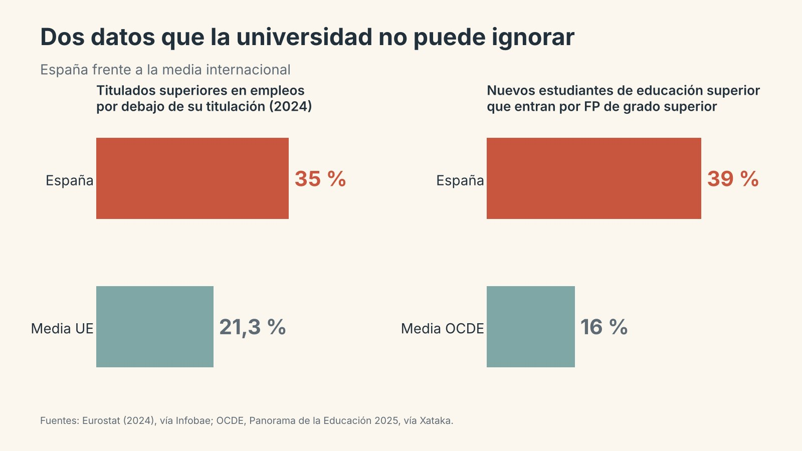

Si la universidad quiere seguir siendo universal, tendrá que empezar por ser, sin complejos, la mejor formación profesional que existe.
El conocimiento ya no vive en el aula
Hace apenas quince años, para saber termodinámica, derecho mercantil o anatomía había que ir a la universidad. Allí estaban los libros, los laboratorios y, sobre todo, las personas que sabían. Hoy eso ya no es así, y la IA generativa, que lleva entre nosotros apenas cuatro años, ha terminado de romper ese monopolio.
Cualquier estudiante tiene en el bolsillo cursos abiertos de las mejores universidades del mundo, artículos científicos en acceso abierto y una inteligencia artificial capaz de explicarle la segunda ley de Newton a las tres de la madrugada, con ejemplos, con ejercicios y con toda la paciencia del mundo. El conocimiento se puede adquirir sin la universidad.
Y si eso es así, la pregunta es incómoda pero inevitable: ¿para qué sirve entonces la universidad? Mi respuesta es que debe dejar de ser un lugar donde se transmite saber y convertirse, de verdad, en la nueva formación profesional.
La trampa del nombre
«Universidad» suena a universitas, a saber universal, a claustro y a toga. Es un nombre con tanto prestigio que parece eximir a la institución de rendir cuentas sobre algo tan prosaico como preparar para un oficio. La FP forma profesionales; la universidad, se supone, forma personas cultas. Como si una cosa excluyera la otra.
Pero preguntemos a cualquier estudiante de primero por qué se ha matriculado. Casi nadie responde «para alcanzar el saber universal». Responden «para ser ingeniera», «para ser enfermero», «para ser maestra». Van a buscar una profesión. La universidad ya es, de hecho, una formación profesional; lo que ocurre es que, escudada en su nombre, no siempre se comporta como tal.
Mientras tanto, la FP ha dejado de ser la hermana pobre. Ya no es el camino de quien «no vale para estudiar», sino una opción elegida, con prácticas reales en empresa y una conexión directa con el mundo laboral. Y eso debería hacer pensar a la universidad.
Lo que dicen los datos

España es el país de la UE con más titulados superiores trabajando en empleos que no requieren su titulación: un 35 % en 2024, frente al 21,3 % de media europea, según Eurostat (Infobae). Uno de cada tres. No es un problema de falta de formación, sino de desajuste entre lo que se forma y lo que se necesita.
Los jóvenes ya lo han entendido. Según el informe Panorama de la Educación 2025 de la OCDE, el 39 % de quienes acceden por primera vez a la educación superior en España lo hace por un ciclo de FP de grado superior, frente al 16 % de media en la OCDE (Xataka). Entre 2020 y 2025, la matrícula en grado superior creció casi un 30 %.
Y el mercado laboral también habla: el 47 % de las ofertas de empleo publicadas en España pide un perfil de FP, según el informe Infoempleo Adecco 2024. Muchos estudiantes que aprueban la PAU, y que podrían ir a la universidad, eligen otra cosa. No es casualidad: buscan lo que la universidad promete por su nombre pero no siempre entrega.
Una puerta que nadie abrió
No hablo desde la teoría. En la Fundación Flors de Vila-real llevamos años trabajando la programación, la robótica y la alfabetización en inteligencia artificial con nuestro alumnado. Esa experiencia nos ha llevado a participar en PRAISE, un proyecto que hemos desarrollado para cuatro universidades europeas.
El pasado verano pensamos que todo eso podría interesar a la universidad que tenemos al lado. Ofrecimos a la Universitat Jaume I de Castellón, en concreto a quienes forman a los futuros maestros y maestras de Educación Primaria, que conocieran el proyecto. No pedíamos nada a cambio. Solo queríamos compartir lo que está funcionando en las aulas.
La respuesta fue el silencio. Ni un sí, ni un no, ni un «ahora no es el momento». Y el plan de estudios sigue siendo el mismo, como si la IA no hubiera entrado ya en las escuelas donde esos futuros docentes van a trabajar dentro de muy poco.
Lo grave no es que nos ignoraran a nosotros. Lo grave es lo que revela: una institución que forma profesionales de espaldas a la profesión. Ninguna empresa que forma a sus técnicos dejaría pasar la oportunidad de ver cómo trabajan quienes ya están en primera línea. La FP, que vive pegada al mundo laboral, tampoco. Ese es exactamente el cambio de mentalidad que reclamo.
Qué significa ser la nueva FP
Convertirse en la nueva FP no es copiar los ciclos formativos. Es asumir que el valor de la universidad ya no está en lo que el alumno escucha, sino en lo que el alumno aprende a hacer. Eso se traduce, al menos, en cinco cambios:
- De temarios a competencias profesionales. Cada asignatura debería responder a una pregunta sencilla: ¿qué sabrá hacer el estudiante al terminarla que antes no sabía hacer?
- La práctica real como columna vertebral. No unas prácticas externas en el último curso, sino retos de empresas, hospitales, escuelas o ayuntamientos desde el primer año. La FP dual lleva tiempo demostrando que funciona.
- Evaluación auténtica. Si un examen memorístico lo puede aprobar una IA, ese examen ya no mide nada que valga la pena. Hay que evaluar productos, proyectos y desempeños, con el alumno delante.
- La IA como herramienta del oficio. Igual que un arquitecto usa software de diseño, el profesional de 2030 trabajará con IA. La universidad debe enseñar a usarla con criterio, no a esconderla.
- Profesorado que conozca la profesión. Profesionales en activo en las aulas, y docentes que pisen con regularidad el mundo para el que forman.
El profesor deja de ser la fuente del conocimiento y pasa a ser el mentor que enseña a aplicarlo, a dudar de él y a convertirlo en trabajo bien hecho. Eso, ninguna máquina lo hace por sí sola.
Profesionalizar no es empobrecer
Sé cuál es la objeción: «la universidad no es una academia de empleo». Tiene razón quien lo dice, y no quiero que se me malinterprete. La investigación, el pensamiento crítico y la cultura humanista son irrenunciables.
Pero precisamente por eso hay que profesionalizarla. El pensamiento crítico no se aprende tomando apuntes; se aprende enfrentándose a problemas reales, sin solución en el libro, donde equivocarse tiene consecuencias. Un buen médico, una buena ingeniera o un buen maestro son, ante todo, personas que piensan con rigor mientras actúan.
No se trata de elegir entre formar profesionales y formar personas. Se trata de entender que, en la era de la IA, la mejor manera de hacer lo segundo es hacer bien lo primero.
Merecer el nombre
La universidad tiene dos caminos. Puede seguir confiando en su nombre y en el prestigio de siglos, mientras cada año más jóvenes eligen otra puerta. O puede asumir que su razón de ser ya no es guardar el conocimiento, sino enseñar a usarlo.
Quienes trabajamos en educación secundaria lo vemos cada día: nuestros alumnos ya no necesitan que alguien les cuente las cosas. Necesitan que alguien les enseñe a hacer algo valioso con ellas. Si la universidad quiere seguir siendo universal, tendrá que empezar por ser, sin complejos, la mejor formación profesional que existe.
Próximamente, la Parte 2: «La PAU, una puerta equivocada».
Fuentes
- España, a la cola de la UE: los españoles son los europeos con títulos superiores que más trabajan en empleos donde no se necesitan. Infobae, con datos de Eurostat (2024).
- España preparó a miles de jóvenes para la universidad aprobando la PAU: cuatro de cada diez terminaron haciendo un grado de FP. Xataka, con datos de la OCDE (Panorama de la Educación 2025), el Ministerio de Educación e Infoempleo Adecco 2024.
- El sorpaso de la FP a la universidad ya está aquí. Genbeta (2025).